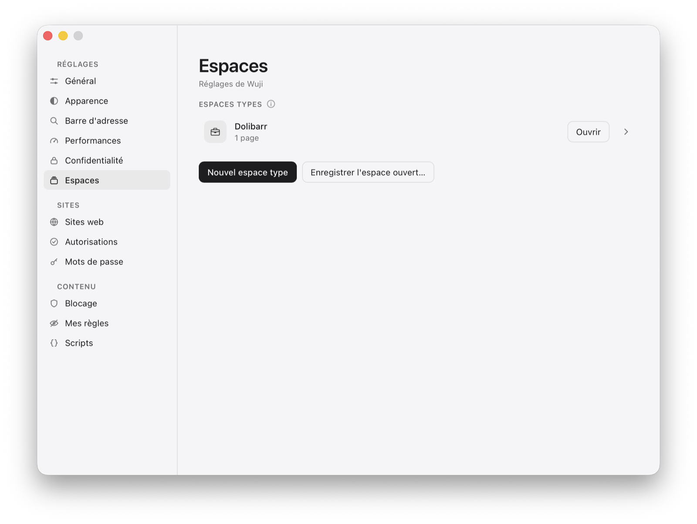
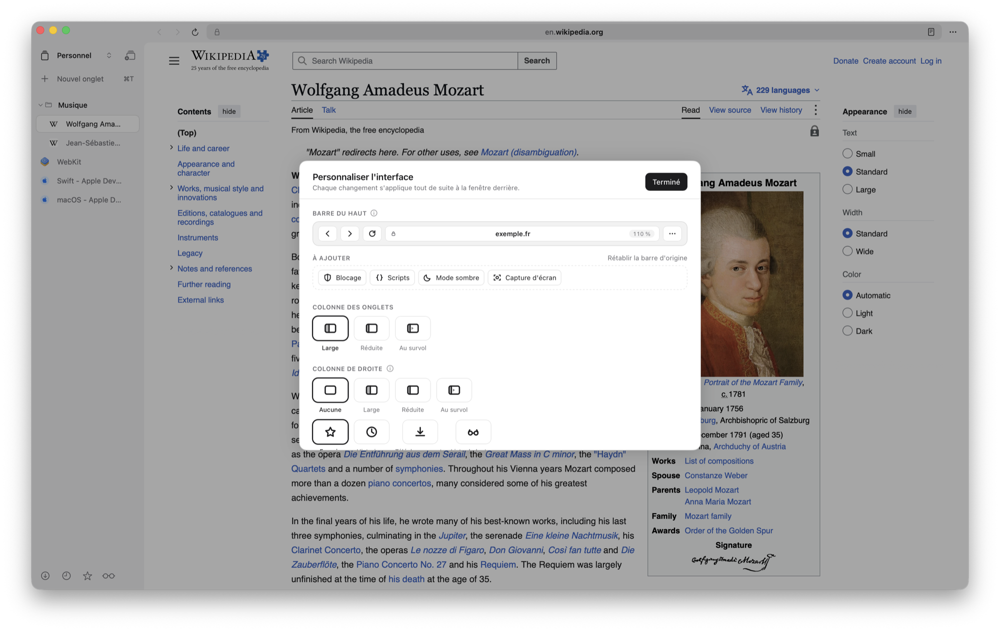
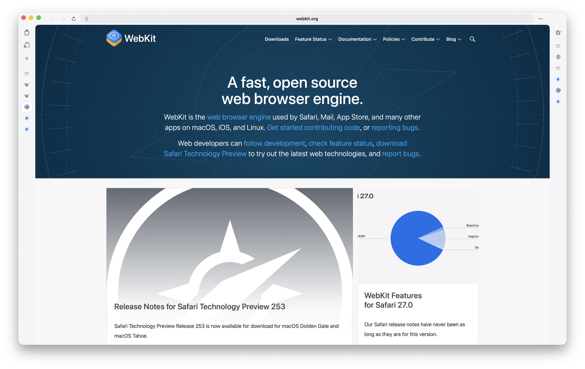
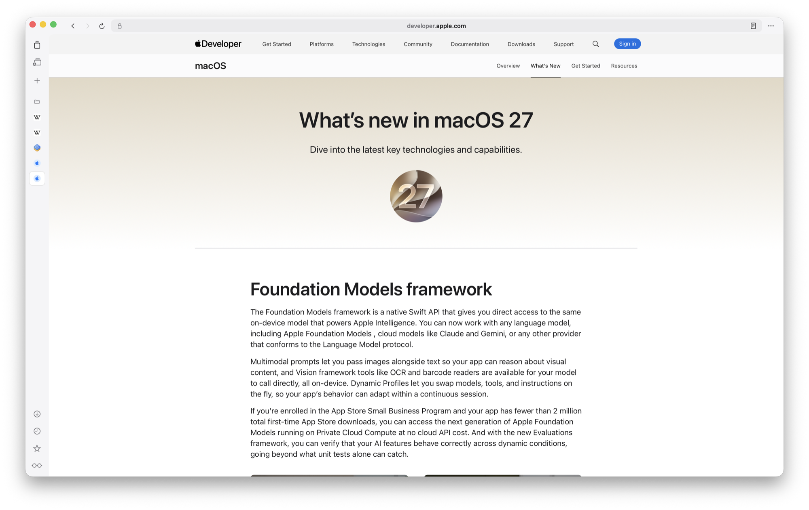
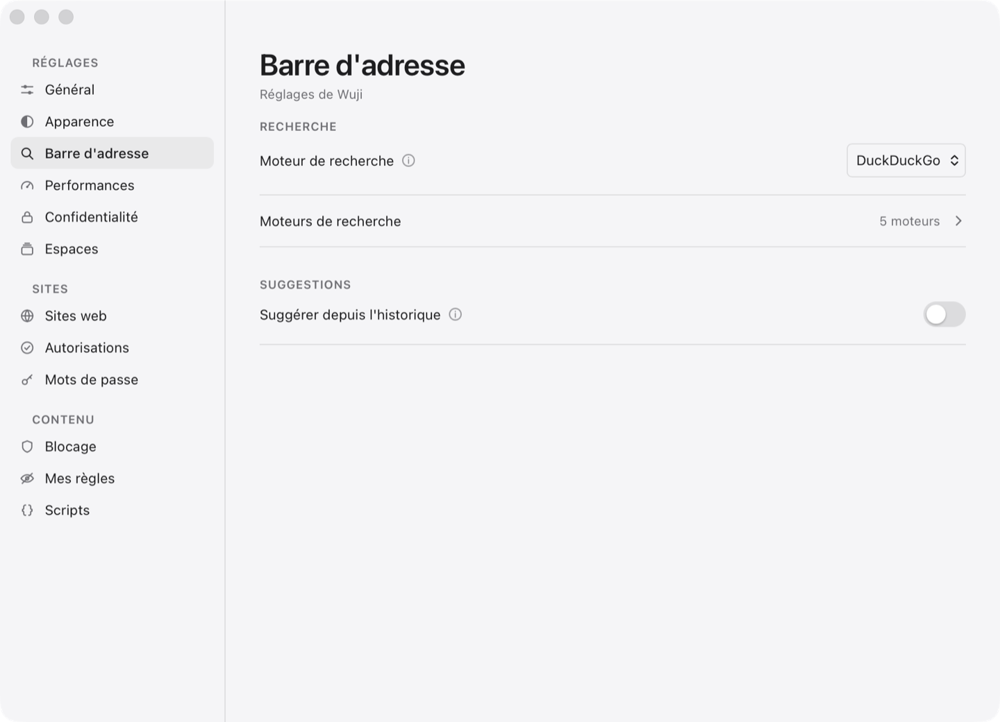
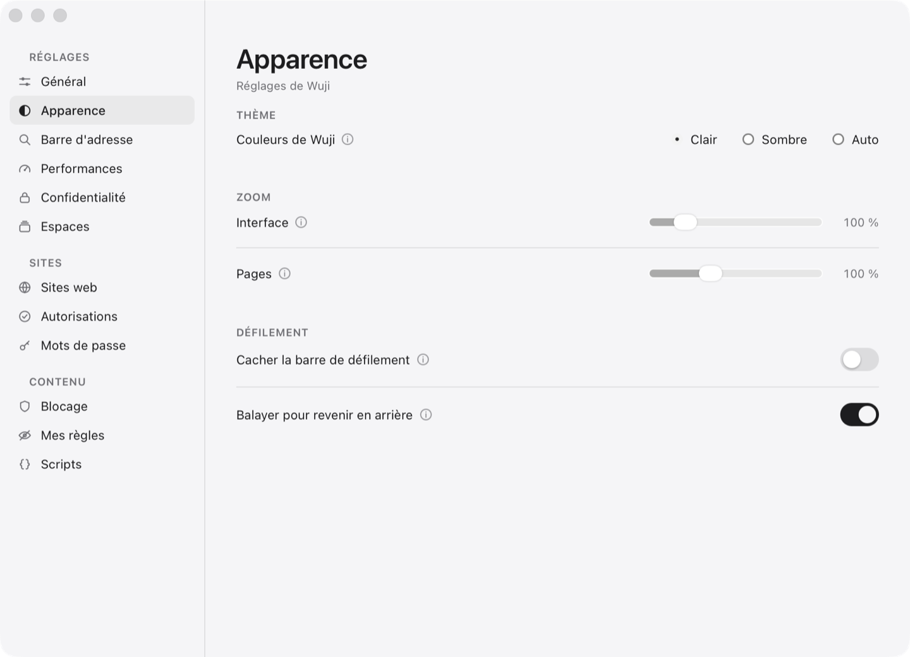
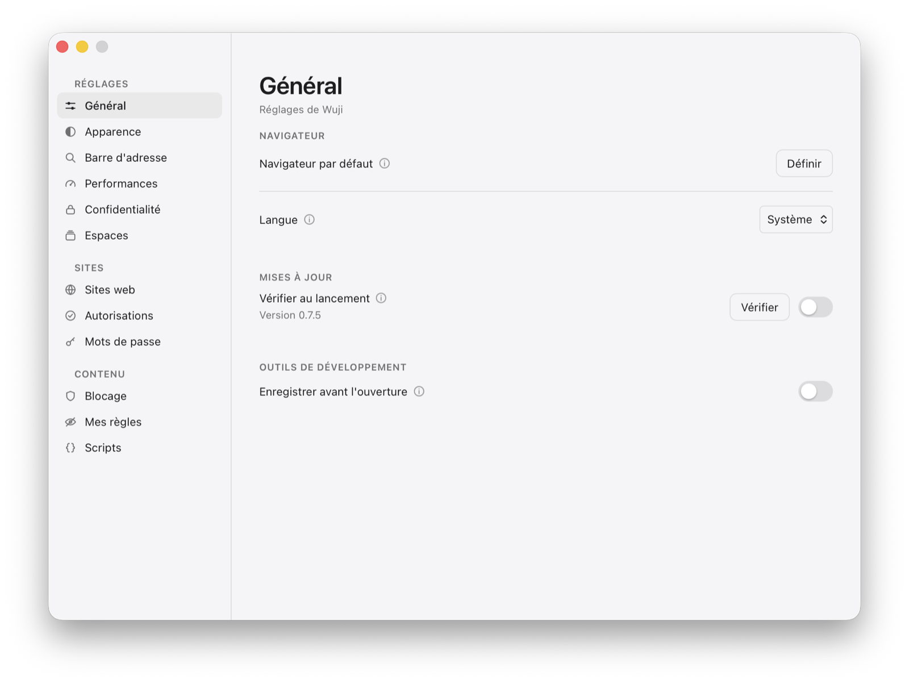

WujiNaviguer
Naviguer
Une fenêtre, des espaces, deux colonnes et une palette. Tout ce qui sert à ouvrir, ranger et retrouver une page — et rien qui s'accumule.
Fenêtres, espaces et dossiers
Les onglets appartiennent à un espace, chaque fenêtre a les siens, et chaque espace se range en dossiers.


Des fenêtres, chacune avec ses espaces
⌘N en ouvre une, ⇧⌘W la ferme. Fermer une fenêtre ferme ses onglets — et Fichier › Rouvrir la fenêtre fermée la rend avec ses espaces. Au lancement, toutes reviennent à leur place.
Des espaces
⌥T en crée un, ⌥W le ferme, ⌥]/$ et ⌥[/^ passent de l'un à l'autre — les mêmes touches que pour les onglets, l'autre modificateur. Changer d'espace se voit : la colonne entre du côté d'où il vient.
Un nom, un symbole
Le titre de la colonne ouvre la carte des espaces : leur nom, leur symbole, le nombre d'onglets de chacun. On les réordonne au glisser et on les renomme sur place.
Des espaces types
Une recette plutôt qu'un espace : l'ouvrir en crée un neuf, avec ses onglets. On en compose un, ou l'on enregistre l'espace ouvert (Réglages › Espaces).
Des dossiers d'onglets
⌥⌘N crée un dossier ; un onglet s'y range au glisser, et le dossier se replie. Le clic droit dans le vide de la colonne propose nouvel onglet, rouvrir l'onglet fermé, nouveau dossier.
Rien ne se ferme par surprise
Fermer un espace ne demande rien, mais rien n'est perdu : l'historique garde ses pages, et la session d'avant est conservée à côté de la courante.
Deux colonnes, trois largeurs
À gauche les onglets, à droite ce qu'on a mis de côté. Chacune se règle, se déplace, ou s'efface.



Large, réduite, au survol
Chaque colonne a trois largeurs : pleine, réduite à ses icônes, ou réduite et qui s'ouvre quand le curseur approche. Elles se choisissent sous le titre de la colonne, d'un clic.
La colonne de droite
Favoris, historique, téléchargements ou liste de lecture — une seule à la fois, choisie sous son titre. Chacune se cherche, et l'historique se parcourt en entier, pas ses dernières pages.
Ranger au glisser
Les favoris et leurs dossiers se rangent comme les onglets : une place s'ouvre là où ils tomberont, le milieu d'un dossier y fait entrer.
Tirer vers la page
Une page de la colonne de droite tirée sur la moitié gauche ou droite de la page s'ouvre à côté de celle qu'on lit ; s'il n'y a pas de page, elle s'ouvre à sa place.
Échanger les deux colonnes
Les onglets à droite et les listes à gauche, si c'est ainsi qu'on travaille : un seul réglage, et tout suit — les congés, les ouvertures au survol.
Personnaliser l'interface
Une carte posée au milieu de la fenêtre : on y fait glisser les boutons de la barre du haut, on choisit les largeurs et la liste de droite, en voyant l'interface changer derrière.
Le zoom de l'interface
De 80 à 200 %, pour la colonne, la barre et les panneaux, sans toucher aux pages : le chrome est redessiné à l'échelle, pas agrandi comme une image.
Un défilement comme la page
Les colonnes défilent avec la physique du système — l'amorti de la molette, l'élan du trackpad, le rebond aux deux bouts. Une colonne où tout tient ne bouge pas.
La barre d'adresse et la palette
Un champ pour tout : une adresse, une recherche, un onglet déjà ouvert, une page d'hier.

Trois gestes, pas un de plus
La palette s'ouvre sur ⌘T, ⌘L et le clic sur l'adresse. Jamais toute seule : on venait de fermer quelque chose, pas de demander un champ.
Compléter en tapant
« you » devient « youtube.com », la fin sélectionnée : Entrée y va, une touche de plus la remplace, ⌫ l'efface.
Des suggestions qui restent chez vous
Onglets ouverts, favoris, et l'historique si vous l'allumez — sur la période et au nombre choisis. Aucune frappe ne part chez un moteur de recherche.
Cinq moteurs, et les vôtres
Google, DuckDuckGo, Qwant, Bing et Luxxle, chacun avec son mot-clé : @d mozart cherche sur DuckDuckGo quel que soit le moteur par défaut. On en ajoute, on en retire.
Un champ qui ne bouge pas
Il prend toute la longueur entre les boutons, et sa place ne dépend que de la fenêtre. Le cadenas est à gauche et n'en bouge plus : un indicateur de sécurité qui change de place se cherche avant de se lire.
Le badge du zoom
Quand un site s'écarte du zoom par défaut, un badge le dit dans la barre, et un clic le rend. Plus d'écart, plus de badge.
Deux pages côte à côte
Lire l'une en écrivant dans l'autre, comparer deux versions, suivre une vidéo à côté d'une documentation.

Diviser, défaire
⇧⌘D divise la vue avec un onglet neuf, et la referme. Défaire une paire ne ferme rien : les deux onglets restent où ils étaient.
Tirer un onglet ou un favori
Tiré au-dessus de la page, il fait paraître deux cartes, « À gauche » et « À droite » ; relâché sur l'une, il s'ouvre de ce côté.
La proportion qu'on veut
L'interstice se tire ; un double-clic le remet au milieu. La session retrouve la paire et sa proportion au lancement suivant.
La barre suit le panneau actif
On choisit un panneau en y cliquant : l'adresse, la recherche dans la page, le zoom, le mode lecture et ⌘W le visent, sans rien savoir de la paire.
Le mode zen
La page, seule, jusqu'aux bords de la fenêtre — ou de l'écran.

Tout s'efface
Les colonnes et la barre partent ; la page prend toute la fenêtre, coins compris. En plein écran, elle touche les bords de l'écran.
La barre de titre revient quand on la cherche
Le curseur sur la zone des pastilles, ou contre le bord haut : la barre paraît, se tire pour déplacer la fenêtre, et s'efface une demi-seconde après.
La sortie et le zoom, joints dans le coin
Un seul onglet en bas à droite porte la sortie du mode zen et le curseur de zoom, avec le même arrondi que le reste de l'interface.
Le zoom
Deux zooms, qui ne se mélangent pas : celui des pages, retenu par site, et celui de l'interface.

Zoom par site
⌘+ et ⌘− règlent le site qu'on regarde, et il s'en souvient ; ⌘0 lui rend le zoom par défaut. Seuls les écarts sont gardés — un site qui se lit mal n'impose pas sa correction à tout le web.
Un curseur sur la page
Un curseur de zoom peut se poser en bas à droite de la page, attaché à son bord : il règle le même zoom par site, au même pas.
L'écart se mesure au réglage
Le badge et le curseur comparent au zoom par défaut que vous avez choisi, pas à cent pour cent.
Onglets, son et sessions

Rouvrir ce qu'on a fermé
⇧⌘T rouvre le dernier onglet fermé. La session est enregistrée à chaque changement, et la précédente est gardée à côté : une écriture ratée devient un renommage, pas une perte.
Un onglet qui joue brille
Son contour s'éclaire dans la colonne. Un haut-parleur paraît dans le champ d'adresse : couper le son, pause, lecture, incrustation — même quand le lecteur vit dans un cadre d'un autre site.
Le son se coupe dans le moteur
La vidéo continue, la page ne voit rien et ne peut pas remettre le son d'elle-même.
Une page de Wuji par espace
Favoris, historique, réglages : les raccourcis rejoignent l'onglet déjà ouvert sur une page de Wuji plutôt que d'en empiler un de plus.
Des gestes du Mac
Balayer à deux doigts revient en arrière — et se coupe si vos tableaux larges partent en navigation. La barre de défilement peut se cacher.
Les menus du système
Les menus sont ceux de macOS — clavier, VoiceOver, sous-menus compris. Les questions de Wuji, elles, arrivent dans une bulle en bas à droite, et fermer sans répondre vaut « non ».
Français ou anglais
Réglages › Général › Langue : « Système » suit le Mac, sinon le français ou l'anglais, au lancement suivant. Les unités, la virgule et les dates suivent la langue de Wuji. Une langue de plus, c'est un fichier à traduire.